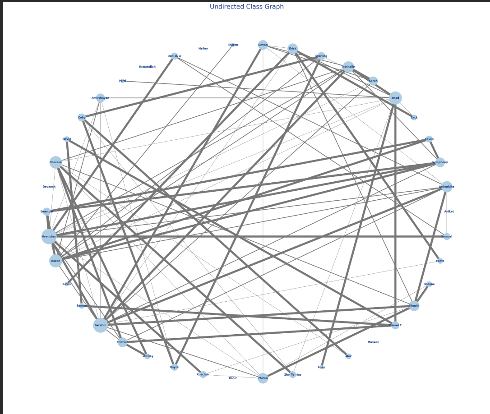

Project

Construct a Pro Forma Financial Model for a Software Startup
(2025)
Develop a financial forecast to model growth potential for a high-growth SaaS company by using computational analysis to predict revenue and scalability.
Explore

Relationship Network Modeling
(2025)
Modeled classmate relationships using set theory and graph theory, progressing from a Venn diagram to directed and undirected network graphs.
View on GitHub